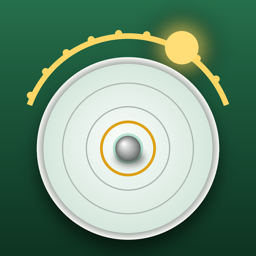

RoomScout
床・音・冬の日当たりを、その場で診断
RoomScout（ルームスカウト）は、賃貸や購入の内見で「床の傾き」「窓の遮音」「冬の日当たり」の3つを測り、点数つきの診断カードにまとめるiPhoneアプリです。カードは画像なので、LINEなどで家族やパートナーにそのまま送れます。
English使い方
- ホームの「新しい物件を診断する」で物件を作ります（名前・家賃・メモ）。
- 床：部屋を選び、「この部屋の床を記録」をタップ。スマホを床に置いて手を離し、案内が出たら同じ場所でくるっと180°回してもう一度置きます。
- 音：窓を開けて5秒、窓を閉めて5秒測ります。閉めたときに何dB下がったかで判定します。
- 日当たり：窓に向けてカメラをかざすと、夏至・春分秋分・冬至の太陽の通り道が重なります。下のスライダーで時刻を動かし、冬至の太陽（青い線）が向かいの建物より上を通るかを見て、「この景色で日当たりを記録」をタップします。
- 診断：3つのスタンプがそろうと、診断カードができます。「診断カードを家族に送る」から共有できます。
よくある質問
なぜ床で2回置くのですか？
iPhoneは背面のカメラの出っ張りやケースで、床に置くだけで1〜2°ほど傾きます。判定に使う0.17°よりずっと大きいので、向きを180°変えて2回測り、その差から端末の傾きを打ち消しています。一度測ると端末のくせを覚えるので、ふだんのビー玉の表示も正確になります。
判定の基準は？
床は、1mあたり3mm（3/1000、約0.17°）以内を「ほぼ水平」、6mm（6/1000、約0.34°）以内を「許容範囲」、それを超えると「傾きあり」としています。住宅の品質確保の促進等に関する法律の技術的基準で使われている数字を目安にしています。窓は、閉めたときに25dB以上下がれば「遮音バッチリ」、15dB以上で「標準的」です。
数値は正確ですか？
スマホのセンサーとマイクによる目安です。dBの値は機種によって数dBずれますが、同じスマホで窓を開けたとき・閉めたときを比べるので、差は目安として使えます。正式な検査の代わりにはなりません。
日当たりの方角がずれています
コンパスは鉄筋の建物の中で10°以上ずれることがあります。「方位を合わせる」で、画面の北・南を実際の方角に合わせてください。晴れていれば、いま見えている太陽に今日の位置を重ねるのが一番正確です。
マイク・カメラ・位置情報が使えません
設定 > RoomScout で、マイク・カメラ・位置情報をオンにしてください。位置情報がない場合は東京で計算します。
お問い合わせ
English
RoomScout measures three things during an apartment or house viewing: floor tilt (with a two-placement method that cancels the camera bump), how much the window cuts outside noise, and whether the low winter sun reaches the window (AR sun paths for the summer solstice, equinox and winter solstice). The results become one score card image you can share. All values are estimates from the phone's sensors. Contact: tajimaru1209@gmail.com
プライバシーポリシー
収集する情報
RoomScoutは、個人情報・利用状況・端末情報を収集しません。アカウント、広告、分析ツール、トラッキングはなく、サーバーにも接続しません。
記録したデータ
物件の名前・家賃・メモ・計測結果・日当たりの画像は、端末の中にだけ保存します。アプリを削除すると消えます。診断カードは、あなたが共有したときだけ、選んだアプリに渡されます。
マイク
音の大きさを測るためだけに使います。音声は録音・保存しません。
カメラ
太陽の通り道を重ねて表示するために使います。映像は保存しません。「記録」をタップしたときの画面だけを、端末の中に保存します。
位置情報
太陽の位置を計算するためだけに使い、端末の外に送りません。保存もしません。
モーションセンサー
床の傾きを測るために使います。端末のくせ（補正値）だけを端末の中に保存します。
購入
RoomScoutはApp Storeで販売され、支払いはAppleが処理します。支払い情報は受け取りません。
Privacy Policy (English)
RoomScout collects no personal information, usage data or device information, has no accounts, ads, analytics or tracking, and does not connect to any server. Properties, measurements and captured images are stored only on your device. The microphone measures loudness only and nothing is recorded. The camera shows the AR sun paths; only the frame you choose to record is saved on the device. Location is used only to calculate the sun's position and is never sent or stored.
変更
このポリシーを変更する場合は、このページを更新します。
最終更新：2026年11月23日